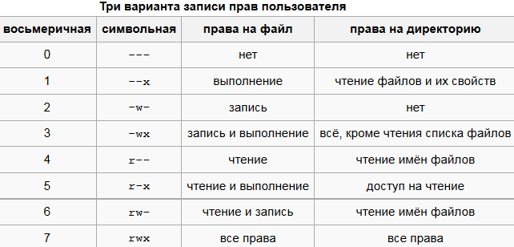

Уровень 4: Права доступа в Linux
В этом задании ты познакомишься с командами chmod и ls -l, которые управляют правами доступа к файлам.
ls -l — показывает права доступа к файламchmod 755 filename — устанавливает права rwxr-xr-x- rwxr-xr-x означает:
- rwx — владелец может читать, писать, запускать
- r-x — группа может читать и запускать
- r-x — остальные могут читать и запускать

Шаги задания:
- Запусти скрипт для уровня 4 (если ещё не сделал):
bash <(curl -s https://твой-сайт/setup.sh)
- Перейди в папку уровня 4:
cd ~/kali_quest/level4
- Посмотри текущие права файла:
ls -l secret_file.txt
- Измени права файла на 755:
chmod 755 secret_file.txt
- Проверь изменения:
ls -l secret_file.txt
- Скопируй комбинацию прав и введи её как флаг ниже.